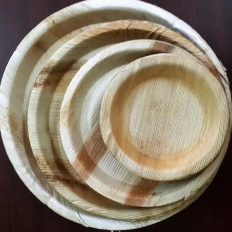
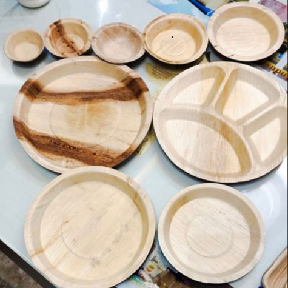

Arica leaf table ware
Areca leaf tableware is an eco-friendly and sustainable alternative to plastic and paper disposables, made from naturally fallen leaves of the areca palm tree. Without cutting down any trees, these leaves are collected, cleaned, and heat-pressed into various shapes like plates, bowls, and trays. The tableware is 100% biodegradable, compostable, and free from chemicals, making it safe for food use and ideal for both hot and cold dishes. Durable, lightweight, and stylish, areca leaf products are perfect for events, picnics, and everyday use while supporting environmental sustainability.


